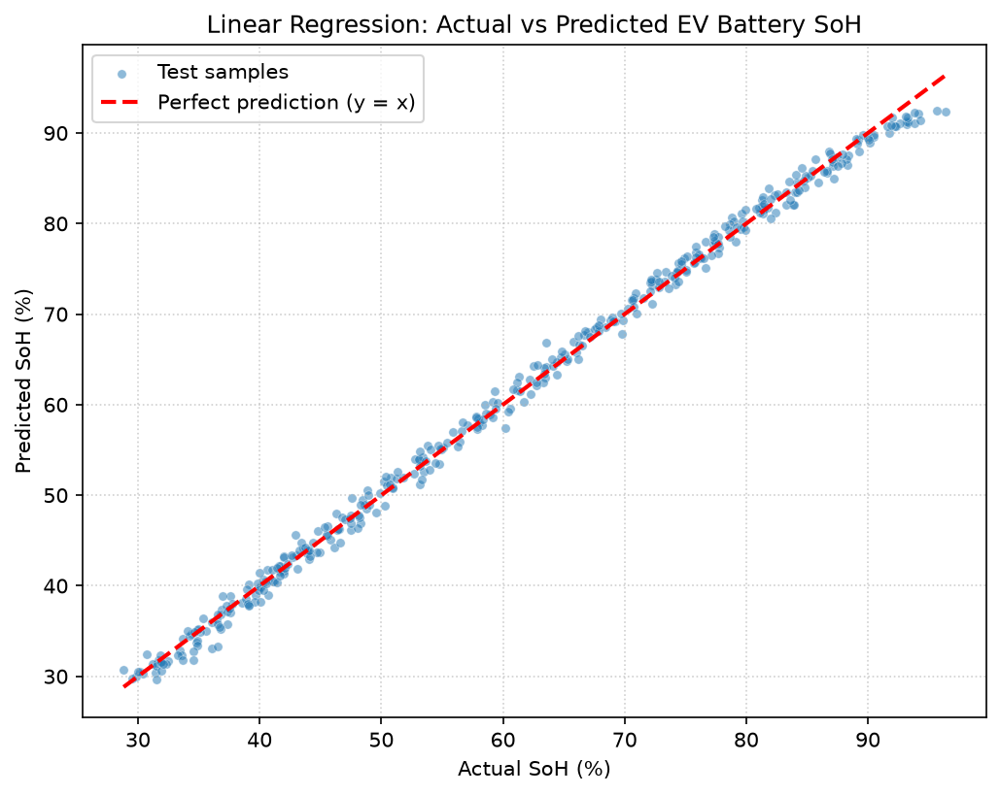

Every charge cycle writes itself into the pack as a tiny loss of capacity. This model reads 2,000 real EV battery samples and predicts the remaining State of Health (SoH) from ten everyday sensor readings — to within about one percentage point.
Set the ten readings the way you’d see them from the battery management system. The model predicts SoH instantly in your browser — no server, no upload, nothing leaves this page.
Every point below is a real battery sample from the Kaggle Battery State of Health Dataset. Rotate the cloud yourself — color runs from healthy (green) to heavily aged (terracotta).
A textbook regression pipeline, explained cell by cell in the companion notebook analysis.ipynb.
Read the CSV with pandas and verify the shape.
Check data types and column names before modelling.
Drop rows with missing values — no empty cells feed the model.
Drop ID columns, one-hot any text, keep only numbers.
80% trains, 20% stays untouched as the honest test set.
Fit LinearRegression — one line, least squares math inside.
Score with R² and RMSE on the unseen 20%.
Plot predicted vs actual SoH against the perfect line.
The model explains 99.67% of the variation in battery health.
Typical predictions land within ±1 percentage point of true SoH.

The model was trained on the Battery State of Health Dataset (Kaggle): 2,000 multi-cycle battery samples with ten sensor features and a measured SOH target — 100% when new, down to ~28% when heavily aged.
Because each feature is a continuous number, the whole prediction reduces to a single weighted sum — which is exactly why this site can run the model in your browser with zero backend.
| Feature | β coefficient | Pull on SoH |
|---|---|---|
| ↓Cycle | -0.032229 | ages the pack |
| ↓Voltage | -0.099731 | slightly ages |
| ↓Current | -0.063880 | slightly ages |
| ↓Temperature | -0.022395 | heat ages |
| ↓ChargeTime | -0.000934 | negligible |
| ↓DischargeTime | -0.001423 | negligible |
| ↑InternalResistance | +2.385604 | raises estimate |
| ↓Capacity | -0.097175 | slightly ages |
| ↓AmbientHumidity | -0.000338 | negligible |
| ↑C_Rate | +0.056219 | raises estimate |
Full precision coefficients, exported straight from the trained sklearn model.